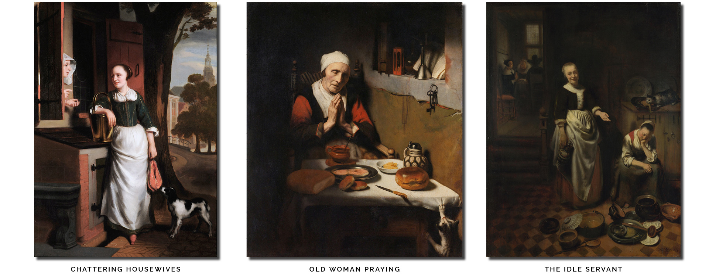
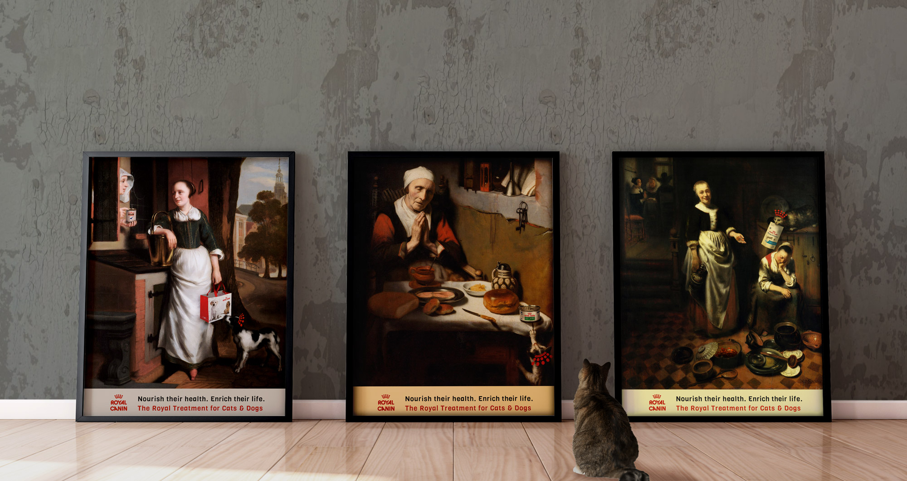

Royal Canin and Nicolaes Maes
Photoshop, Illustrator
A fun Photoshop experience was to place contemporary consumer product into paintings. I exercised skills in the control of lighting, color, and texture through adapting modern packging into an antique scene. Maes' style reveals humorous interactions between humans and pets that animal guardians appreciate, making it an attractive advertising campaign series for a pet product like Royal Canin.
As an advertising approach, placing Royal Canin products into Maes' paintings humanizes what is a very scientific and cultivated brand identity. Royal Canin is a French company that develops food formulas that are breed specific; the products are more costly than grocery brands and come recommended by dog breeders and veterinarians. In order to motivate potential customers to spend more money on their pets, this poster series promotes the commonplace relationships between humans and pets, a deviation from previous campaigns that address the scientific approach to care and feeding.
Nicholaes Maes Originals
Royal Canin Advertisement Series
Chattering Housewives
I placed two product images into this scene: a can in the hand of the woman in the window and a brand shopping tote into the hand of the woman standing. A dog sniffs excitedly at the package as the ladies talk about the great Royal Canin product line. I recreated tree trunk textures, lighting, shadows, and crackle paint texture to adapt the product to the environment.
Old Woman Praying
My cats always want to steal a bite of fish when opportunity exists; the scene depicted presents a familiar experience to cat owners and I knew a can of cat food was the perfect choice for product placement. I adapted the can's perspective to match the table's angles, in addition to adding shadow and reflective properties.
The Idle Servant
This active scene by Maes depicts a dinner party; the cat has an opportunity to grab its own delightful treats and beg for more. Royal Canin cat treats are added to the standing woman's hand, as well as inserted into one of the unattended dishes on the floor. This painting presented particular lighting challenges as the scene is very dim and the whites appear yellow - either from age or varnish. Photoshop adjustment layers were used heavily to adapt the treat bag with color, texture, and shadows to the original painting.